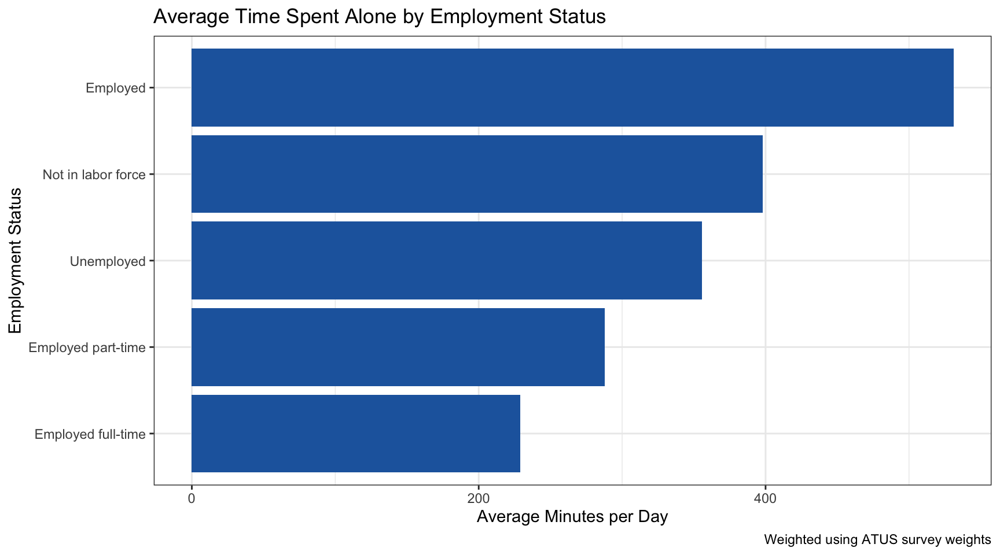
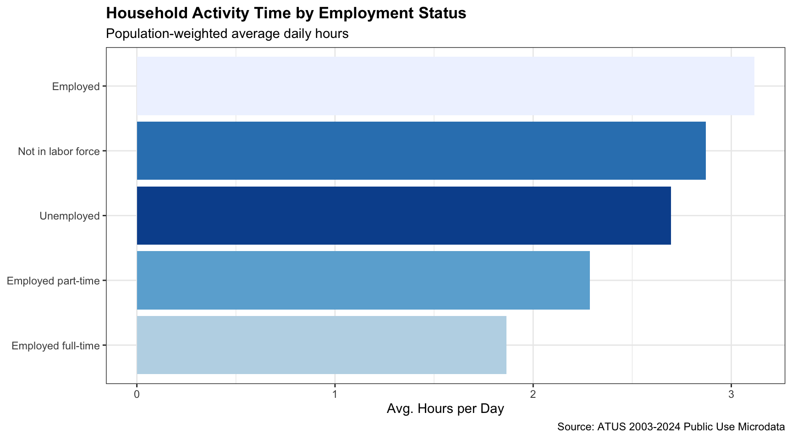
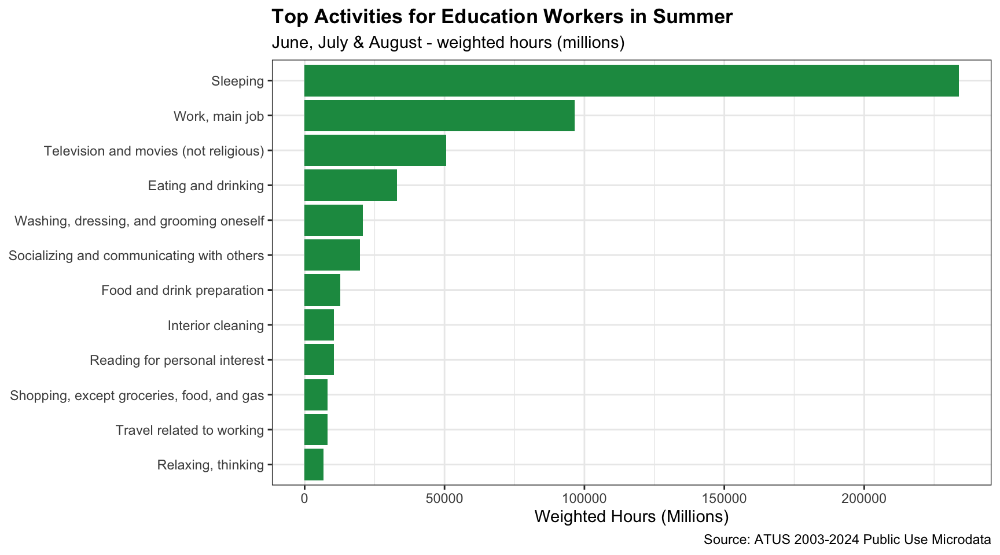
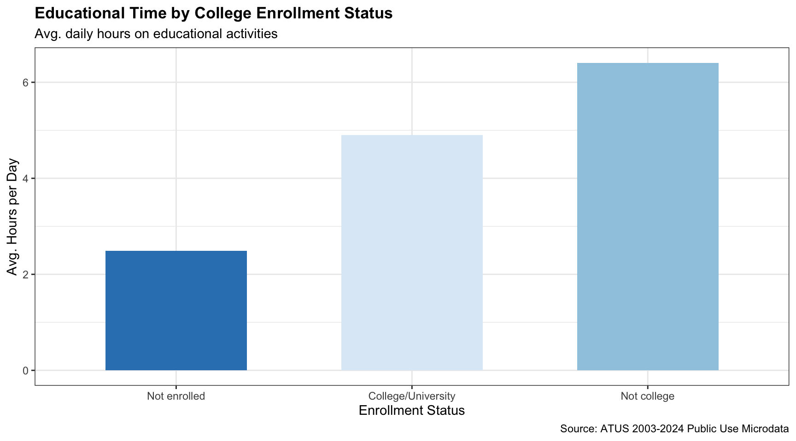
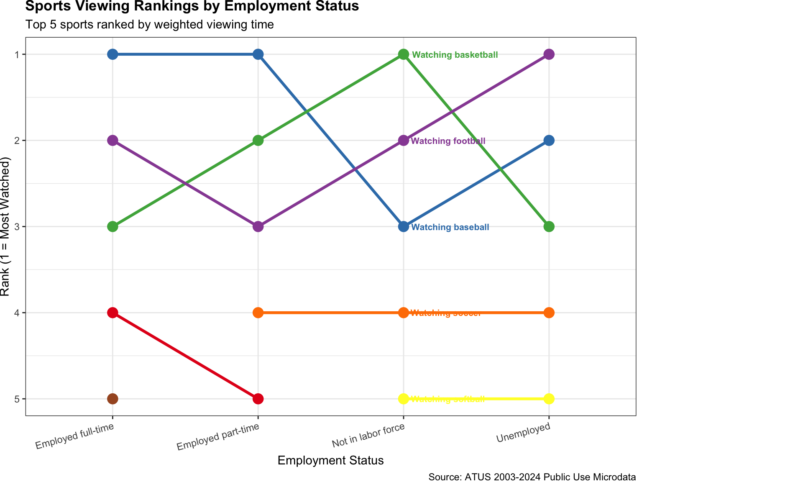
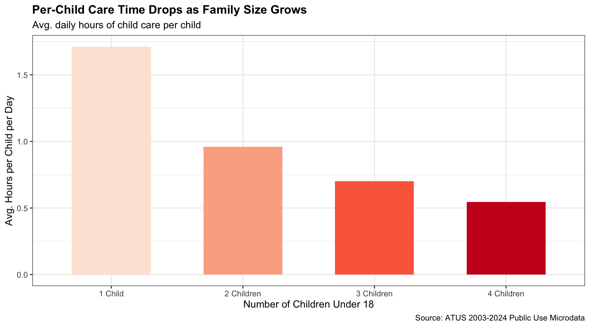
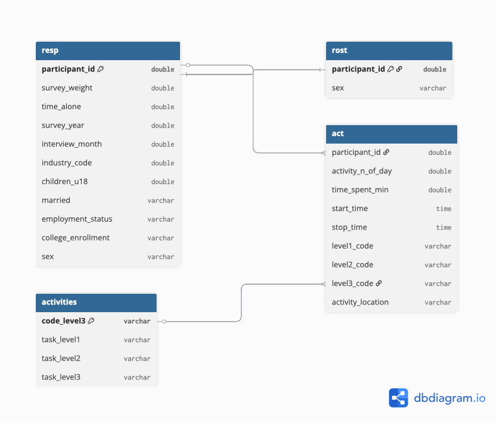

library(tidyverse)
library(glue)
library(httr2)
load_atus_data <- function(file_base = c("resp", "rost", "act")){
if(!dir.exists(file.path("data", "mp02"))){
dir.create(file.path("data", "mp02"),
showWarnings = FALSE, recursive = TRUE)
}
file_base <- match.arg(file_base)
file_name_out <- file.path("data", "mp02",
glue("atus{file_base}_0324.dat"))
if(!file.exists(file_name_out)){
url_end <- glue("atus{file_base}-0324.zip")
temp_zip <- tempfile(fileext = ".zip")
temp_dir <- tools::file_path_sans_ext(temp_zip)
request("https://www.bls.gov") |>
req_url_path("tus", "datafiles", url_end) |>
req_headers(`User-Agent` = "Mozilla/5.0 (Macintosh; Intel Mac OS X 10.15; rv:143.0) Gecko/20100101 Firefox/143.0") |>
req_perform(temp_zip)
unzip(temp_zip, exdir = temp_dir)
file.copy(file.path(temp_dir, basename(file_name_out)),
file_name_out)
}
file <- read_csv(file_name_out, show_col_types = FALSE)
switch(
file_base,
resp = file |>
rename(
survey_weight = TUFNWGTP,
time_alone = TRTALONE,
survey_year = TUYEAR,
interview_month = TUMONTH,
industry_code = TEIO1ICD
) |>
mutate(
children_u18 = TRCHILDNUM,
married = case_match(
TRSPPRES,
1 ~ "Married",
2 ~ "Not married",
.default = "Not married"
),
college_enrollment = case_when(
TESCHENR == 1 & TESCHLVL == 2 ~ "College/University",
TESCHENR == 1 & TESCHLVL == 1 ~ "Not college",
TESCHENR == 2 ~ "Not enrolled",
TRUE ~ NA_character_
),
employment_status = case_when(
TELFS %in% c(1,2) & TRDPFTPT == 1 ~ "Employed full-time",
TELFS %in% c(1,2) & TRDPFTPT == 2 ~ "Employed part-time",
TELFS %in% c(1,2) ~ "Employed",
TELFS %in% c(3,4) ~ "Unemployed",
TELFS == 5 ~ "Not in labor force",
TRUE ~ NA_character_
)
),
rost = file |>
mutate(
sex = case_match(TESEX,
1 ~ "M", 2 ~ "F",
.default = NA_character_)
),
act = file |>
mutate(
activity_n_of_day = TUACTIVITY_N,
time_spent_min = TUACTDUR24,
start_time = TUSTARTTIM,
stop_time = TUSTOPTIME,
level1_code = paste0(TRTIER1P, "0000"),
level2_code = paste0(TRTIER2P, "00"),
level3_code = as.character(TRCODEP),
activity_location = case_match(
TEWHERE,
1 ~ "Respondent's home or yard",
2 ~ "Workplace",
3 ~ "Someone else's home",
4 ~ "Restaurant or bar",
5 ~ "Place of worship",
6 ~ "Grocery store",
7 ~ "Other store or mall",
8 ~ "School",
9 ~ "Outdoors away from home",
10 ~ "Library",
11 ~ "Other place",
12 ~ "Car, truck, or motorcycle (driver)",
13 ~ "Car, truck, or motorcycle (passenger)",
14 ~ "Walking",
15 ~ "Bus",
16 ~ "Subway or train",
17 ~ "Bicycle",
18 ~ "Boat or ferry",
19 ~ "Taxi or limousine",
20 ~ "Airplane",
21 ~ "Other mode of transportation",
30 ~ "Bank",
31 ~ "Gym or health club",
32 ~ "Post office",
89 ~ "Unspecified place",
99 ~ "Unspecified transportation",
.default = "Other/Unknown"
)
)
) |>
rename(participant_id = TUCASEID) |>
select(matches("[:lower:]", ignore.case = FALSE))
}
load_atus_activities <- function(){
if(!dir.exists(file.path("data", "mp02"))){
dir.create(file.path("data", "mp02"),
showWarnings = FALSE, recursive = TRUE)
}
dest_file <- file.path("data", "mp02", "atus_activity_codes.csv")
if(!file.exists(dest_file)){
download.file(
"https://michael-weylandt.com/STA9750/mini/atus_activity_codes.csv",
quiet = TRUE, destfile = dest_file, mode = "wb")
}
read_csv(dest_file, show_col_types = FALSE)
}Mini-Project #02: How Do You Do ‘You Do You’?
1 Mini-Project #02: How Do You Do “You Do You”?
1.1 Introduction
The American Time Use Survey (ATUS) provides detailed information on how individuals allocate their time across daily activities. This report analyzes ATUS microdata from 2003 to 2024, exploring how Americans spend their time across activities and demographic groups.
1.2 Data Acquisition
resp <- load_atus_data("resp")
rost <- load_atus_data("rost")
act <- load_atus_data("act")
activities <- load_atus_activities() |>
setNames(c("activity_code", "activity_desc",
"code_level3", "task_level1",
"task_level2", "task_level3")) |>
mutate(code_level3 = as.character(code_level3))
# Join sex from roster into resp
resp <- resp |>
left_join(
rost |> distinct(participant_id, .keep_all = TRUE) |>
select(participant_id, sex),
by = "participant_id"
)
cat("resp rows:", nrow(resp), "\n")resp rows: 252808 cat("sex in resp:", "sex" %in% names(resp), "\n")sex in resp: TRUE cat("activities columns:", names(activities), "\n")activities columns: activity_code activity_desc code_level3 task_level1 task_level2 task_level3 1.3 Data Cleaning and Preparation
glimpse(resp)Rows: 252,808
Columns: 11
$ participant_id <dbl> 2.00301e+13, 2.00301e+13, 2.00301e+13, 2.00301e+13,…
$ time_alone <dbl> 525, 0, 475, 350, 140, 170, 132, 105, 0, 626, 30, 4…
$ survey_year <dbl> 2003, 2003, 2003, 2003, 2003, 2003, 2003, 2003, 200…
$ industry_code <dbl> 7860, 1690, 8470, -1, 7970, 7860, 8470, 8190, 7070,…
$ interview_month <dbl> 1, 1, 1, 1, 1, 1, 1, 1, 1, 1, 1, 1, 1, 1, 1, 1, 1, …
$ survey_weight <dbl> 8155462.7, 1735322.5, 3830527.5, 6622023.0, 3068387…
$ children_u18 <dbl> 0, 2, 0, 2, 2, 1, 1, 1, 3, 4, 1, 1, 1, 1, 1, 2, 0, …
$ married <chr> "Married", "Married", "Married", "Married", "Marrie…
$ college_enrollment <chr> NA, "Not enrolled", "Not enrolled", "Not enrolled",…
$ employment_status <chr> "Employed part-time", "Employed part-time", "Employ…
$ sex <chr> "M", "F", "F", "F", "M", "F", "F", "F", "F", "F", "…glimpse(act)Rows: 4,880,021
Columns: 9
$ participant_id <dbl> 2.00301e+13, 2.00301e+13, 2.00301e+13, 2.00301e+13, …
$ activity_n_of_day <dbl> 1, 2, 3, 4, 5, 6, 7, 8, 9, 1, 2, 3, 4, 5, 6, 7, 8, 9…
$ time_spent_min <dbl> 60, 30, 600, 150, 5, 175, 270, 10, 140, 180, 60, 60,…
$ start_time <time> 04:00:00, 05:00:00, 05:30:00, 15:30:00, 18:00:00, 1…
$ stop_time <time> 05:00:00, 05:30:00, 15:30:00, 18:00:00, 18:05:00, 2…
$ level1_code <chr> "130000", "010000", "010000", "120000", "110000", "1…
$ level2_code <chr> "130100", "010200", "010100", "120300", "110100", "1…
$ level3_code <chr> "130124", "010201", "010101", "120303", "110101", "1…
$ activity_location <chr> "Outdoors away from home", "Other/Unknown", "Other/U…glimpse(activities)Rows: 477
Columns: 6
$ activity_code <chr> "010000", "010000", "010000", "010000", "010000", "01000…
$ activity_desc <chr> "010100", "010100", "010100", "010200", "010200", "01030…
$ code_level3 <chr> "010101", "010102", "010199", "010201", "010299", "01030…
$ task_level1 <chr> "Personal Care", "Personal Care", "Personal Care", "Pers…
$ task_level2 <chr> "Sleeping", "Sleeping", "Sleeping", "Grooming", "Groomin…
$ task_level3 <chr> "Sleeping", "Sleeplessness", "Other Sleeping", "Washing,…resp |> count(survey_year)# A tibble: 22 × 2
survey_year n
<dbl> <int>
1 2003 20720
2 2004 13973
3 2005 13038
4 2006 12943
5 2007 12248
6 2008 12723
7 2009 13133
8 2010 13260
9 2011 12479
10 2012 12443
# ℹ 12 more rowsresp |> count(sex)# A tibble: 2 × 2
sex n
<chr> <int>
1 F 140756
2 M 112052resp |> count(employment_status)# A tibble: 5 × 2
employment_status n
<chr> <int>
1 Employed 1
2 Employed full-time 122728
3 Employed part-time 32553
4 Not in labor force 86841
5 Unemployed 10685act |>
summarize(
min_min = min(time_spent_min, na.rm = TRUE),
mean_min = mean(time_spent_min, na.rm = TRUE),
max_min = max(time_spent_min, na.rm = TRUE)
)# A tibble: 1 × 3
min_min mean_min max_min
<dbl> <dbl> <dbl>
1 1 74.6 1350I created four data frames: resp, rost, act, and activities. The primary joining key is participant_id. For activity-level analysis, level3_code in act joins to code_level3 in activities. Readable labels come from task_level1, task_level2, and task_level3. Note that the combined 2003-2024 ATUS file does not include respondent age directly, so analyses are grouped by other demographic variables such as employment status, marital status, and family size.
1.4 Task 2: Practice Joining Data Files
1.4.1 Question 1: Total Hours on Sleeping Activities
To connect activity durations to readable descriptions, I join act to activities using level3_code == code_level3. An inner_join is used since I only want matched records.
sleep_total <- act |>
inner_join(activities, join_by(level3_code == code_level3)) |>
filter(task_level2 == "Sleeping") |>
summarize(total_hours = round(
sum(time_spent_min, na.rm = TRUE) / 60, 0))
#| eval: false1.4.2 Question 2: Female Participants With No Time Alone in 2003
Sex is already joined into resp from the roster file. No additional join is needed.
female_no_alone <- resp |>
filter(survey_year == 2003, sex == "F", time_alone == 0) |>
nrow()
#| eval: false1.5 Task 3: Adding Additional Demographic Variables
I modified load_atus_data() to include additional demographic and contextual variables required for analysis. Specifically, I added the number of children under 18, marital status, college enrollment status, and employment status to the respondent file, and a readable activity-location variable to the activity file. These transformations convert coded variables into interpretable categories and enable meaningful comparisons across demographic groups in later analysis.
resp |>
select(participant_id, children_u18, married,
employment_status, college_enrollment) |>
glimpse()Rows: 252,808
Columns: 5
$ participant_id <dbl> 2.00301e+13, 2.00301e+13, 2.00301e+13, 2.00301e+13,…
$ children_u18 <dbl> 0, 2, 0, 2, 2, 1, 1, 1, 3, 4, 1, 1, 1, 1, 1, 2, 0, …
$ married <chr> "Married", "Married", "Married", "Married", "Marrie…
$ employment_status <chr> "Employed part-time", "Employed part-time", "Employ…
$ college_enrollment <chr> NA, "Not enrolled", "Not enrolled", "Not enrolled",…act |>
select(participant_id, activity_location) |>
glimpse()Rows: 4,880,021
Columns: 2
$ participant_id <dbl> 2.00301e+13, 2.00301e+13, 2.00301e+13, 2.00301e+13, …
$ activity_location <chr> "Outdoors away from home", "Other/Unknown", "Other/U…1.6 Data Integration and Initial Exploration
1.6.1 Survey Weighting
Survey weights (survey_weight) adjust ATUS estimates to reflect the broader US population. All estimates below use weighted.mean().
resp |>
filter(!is.na(employment_status)) |>
group_by(employment_status) |>
summarize(
avg_time_alone = weighted.mean(time_alone, survey_weight,
na.rm = TRUE),
.groups = "drop") |>
ggplot(aes(x = reorder(employment_status, avg_time_alone),
y = avg_time_alone)) +
geom_col(fill = "#2166AC") +
coord_flip() +
theme_bw() +
labs(title = "Average Time Spent Alone by Employment Status",
x = "Employment Status",
y = "Average Minutes per Day",
caption = "Weighted using ATUS survey weights")
Those not in the labor force spend the most time alone on average, while full-time employed individuals spend the least. This reflects the social nature of workplaces and the isolation that can accompany retirement or unemployment.
1.6.2 Task 4: Inline Values
Q1: How many different respondents have answered an ATUS survey since 2003?
Since 2003, a total of 252,808 unique individuals have participated in the ATUS survey. This large sample size spanning over two decades allows for reliable population-level estimates across a wide range of demographic groups.
Q2: How many different sports does ATUS ask about watching as a “Level 3” task?
ATUS tracks 33 distinct sports-watching activities at the Level 3 classification, reflecting the wide variety of sporting events that Americans follow as spectators.
Q3: Approximately what percent of Americans are retired?
Using “not in the labor force” as a broad proxy, approximately 32.2% of Americans are currently not in the labor force. This group includes retirees as well as others who are neither employed nor actively seeking work. The estimate is computed using population-weighted survey data, so it better reflects the broader US population.
Q4: On average, how many hours do Americans sleep per night?
On average, Americans sleep about 8.8 hours per night. This figure is broadly in line with the 7–9 hours recommended for adults by sleep researchers, though it includes considerable variation across demographic groups and survey years.
Q5: How many hours do Americans with children spend on child care per day?
Among respondents with at least one child under 18 living at home, parents spend an average of 1.9 hours per day on child care activities. This includes all caregiving activities such as physical care, education involvement, and healthcare — highlighting the significant time investment required of parents.
1.6.3 Task 5: Tables
if(!requireNamespace("gt", quietly = TRUE)) install.packages("gt")
library(gt)Table 1: Lawn & Garden Care — Retired vs. Employed
act |>
inner_join(activities, join_by(level3_code == code_level3)) |>
filter(task_level2 == "Lawn, Garden, and Houseplants") |>
inner_join(
resp |> select(participant_id, survey_weight,
employment_status),
by = "participant_id") |>
filter(employment_status %in% c("Employed full-time",
"Employed part-time",
"Not in labor force")) |>
mutate(emp_group = if_else(
employment_status == "Not in labor force",
"Not in Labor Force", "Employed")) |>
group_by(participant_id, emp_group, survey_weight) |>
summarize(daily_min = sum(time_spent_min, na.rm = TRUE),
.groups = "drop") |>
group_by(emp_group) |>
summarize(avg_hrs = round(
weighted.mean(daily_min, survey_weight,
na.rm = TRUE) / 60, 2)) |>
gt() |>
cols_label(emp_group = "Employment Status",
avg_hrs = "Avg. Daily Hours") |>
fmt_number(columns = avg_hrs, decimals = 2) |>
tab_header(
title = "Lawn & Garden Care: Retired vs. Employed",
subtitle = "Population-weighted average daily hours") |>
tab_source_note("Source: ATUS 2003-2024 Public Use Microdata")| Lawn & Garden Care: Retired vs. Employed | |
| Population-weighted average daily hours | |
| Employment Status | Avg. Daily Hours |
|---|---|
| Employed | 1.95 |
| Not in Labor Force | 2.01 |
| Source: ATUS 2003-2024 Public Use Microdata | |
Table 2: Social & Recreational Time by Marital Status
act |>
inner_join(activities, join_by(level3_code == code_level3)) |>
filter(task_level1 == "Socializing, Relaxing, and Leisure") |>
inner_join(
resp |> select(participant_id, survey_weight, married),
by = "participant_id") |>
group_by(participant_id, married, survey_weight) |>
summarize(daily_min = sum(time_spent_min, na.rm = TRUE),
.groups = "drop") |>
group_by(married) |>
summarize(avg_hrs = round(
weighted.mean(daily_min, survey_weight) / 60, 2)) |>
gt() |>
cols_label(married = "Marital Status",
avg_hrs = "Avg. Daily Hours") |>
fmt_number(columns = avg_hrs, decimals = 2) |>
tab_header(
title = "Social & Recreational Time by Marital Status",
subtitle = "Population-weighted average daily hours") |>
tab_source_note("Source: ATUS 2003-2024 Public Use Microdata")| Social & Recreational Time by Marital Status | |
| Population-weighted average daily hours | |
| Marital Status | Avg. Daily Hours |
|---|---|
| Married | 4.59 |
| Not married | 5.28 |
| Source: ATUS 2003-2024 Public Use Microdata | |
Table 3: Where High-Earning Americans Spend Their Time
act |>
filter(!is.na(activity_location)) |>
inner_join(
resp |> select(participant_id, survey_weight),
by = "participant_id") |>
group_by(activity_location) |>
summarize(total_hrs = sum(time_spent_min * survey_weight,
na.rm = TRUE) / 60) |>
arrange(desc(total_hrs)) |>
slice_head(n = 8) |>
mutate(total_hrs = round(total_hrs / 1e6, 1)) |>
gt() |>
cols_label(activity_location = "Location",
total_hrs = "Weighted Hours (Millions)") |>
fmt_number(columns = total_hrs, decimals = 1) |>
tab_header(
title = "Where Americans Spend Their Time",
subtitle = "Top 8 locations by weighted hours") |>
tab_source_note("Source: ATUS 2003-2024 Public Use Microdata")| Where Americans Spend Their Time | |
| Top 8 locations by weighted hours | |
| Location | Weighted Hours (Millions) |
|---|---|
| Other/Unknown | 18,225,515.0 |
| Respondent's home or yard | 14,722,178.2 |
| Workplace | 5,597,142.9 |
| Car, truck, or motorcycle (driver) | 1,600,775.1 |
| Someone else's home | 1,214,056.8 |
| Other place | 1,184,848.0 |
| School | 673,330.3 |
| Restaurant or bar | 538,882.2 |
| Source: ATUS 2003-2024 Public Use Microdata | |
Table 4: Most Common Activities on Public Transit
act |>
filter(activity_location %in% c("Bus", "Subway or train",
"Boat or ferry")) |>
inner_join(activities, join_by(level3_code == code_level3)) |>
inner_join(
resp |> select(participant_id, survey_weight),
by = "participant_id") |>
group_by(task_level3) |>
summarize(weighted_hrs = sum(time_spent_min * survey_weight,
na.rm = TRUE) / 60) |>
arrange(desc(weighted_hrs)) |>
slice_head(n = 10) |>
mutate(weighted_hrs = round(weighted_hrs / 1e6, 1)) |>
gt() |>
cols_label(task_level3 = "Activity",
weighted_hrs = "Weighted Hours (Millions)") |>
fmt_number(columns = weighted_hrs, decimals = 1) |>
tab_header(
title = "Most Common Activities on Public Transit",
subtitle = "Bus, Train, Subway, Boat, or Ferry") |>
tab_source_note("Source: ATUS 2003-2024 Public Use Microdata")| Most Common Activities on Public Transit | |
| Bus, Train, Subway, Boat, or Ferry | |
| Activity | Weighted Hours (Millions) |
|---|---|
| Travel related to working | 28,321.0 |
| Travel related to taking class | 11,344.7 |
| Travel related to eating and drinking | 6,696.0 |
| Travel related to socializing and communicating | 5,664.9 |
| Other Traveling | 2,596.5 |
| Travel related to participating in sports, exercise, or recreation | 2,367.5 |
| Boating | 2,336.0 |
| Work, main job | 2,050.0 |
| Travel related to using medical services | 2,000.6 |
| Travel related to personal care | 1,925.1 |
| Source: ATUS 2003-2024 Public Use Microdata | |
Table 5: Favorite Activities by Survey Year
Since age is not available in the combined file, I break down favorite activities by survey year instead to show trends over time.
act |>
inner_join(activities, join_by(level3_code == code_level3)) |>
mutate(fav_cat = case_when(
task_level2 == "Sleeping" ~ "Sleeping",
str_detect(task_level2, "Relaxing and Leisure") ~ "Watching TV / Leisure",
task_level1 == "Eating and Drinking" ~ "Eating & Drinking",
task_level1 == "Sports, Exercise, and Recreation" ~ "Exercise & Sports",
TRUE ~ NA_character_)) |>
filter(!is.na(fav_cat)) |>
inner_join(
resp |> select(participant_id, survey_weight,
employment_status) |>
filter(!is.na(employment_status)),
by = "participant_id") |>
group_by(participant_id, fav_cat, employment_status,
survey_weight) |>
summarize(daily_min = sum(time_spent_min, na.rm = TRUE),
.groups = "drop") |>
group_by(fav_cat, employment_status) |>
summarize(avg_min = round(
weighted.mean(daily_min, survey_weight, na.rm = TRUE), 0),
.groups = "drop") |>
pivot_wider(names_from = employment_status,
values_from = avg_min) |>
rename(Activity = fav_cat) |>
gt() |>
tab_spanner(columns = 2:last_col(),
label = "Employment Status - Avg. Minutes per Day") |>
tab_header(
title = "Time Spent on Favorite Activities by Employment Status",
subtitle = "Sleeping, TV/Leisure, Eating & Drinking, Exercise & Sports") |>
tab_source_note("Source: ATUS 2003-2024 Public Use Microdata")| Time Spent on Favorite Activities by Employment Status | |||||
| Sleeping, TV/Leisure, Eating & Drinking, Exercise & Sports | |||||
| Activity |
Employment Status - Avg. Minutes per Day
|
||||
|---|---|---|---|---|---|
| Employed | Employed full-time | Employed part-time | Not in labor force | Unemployed | |
| Eating & Drinking | 17 | 68 | 66 | 72 | 61 |
| Exercise & Sports | NA | 95 | 101 | 102 | 122 |
| Sleeping | 495 | 501 | 535 | 557 | 566 |
| Watching TV / Leisure | 477 | 195 | 232 | 352 | 298 |
| Source: ATUS 2003-2024 Public Use Microdata | |||||
1.6.4 Task 6: Graphs
Graph 1: Household Activity Time by Employment Status
Since age is not available, I show household activity time by employment status instead, which reveals a similar life-stage pattern.
act |>
inner_join(activities, join_by(level3_code == code_level3)) |>
filter(task_level1 == "Household Activities") |>
inner_join(
resp |> filter(!is.na(employment_status)) |>
select(participant_id, survey_weight,
employment_status),
by = "participant_id") |>
group_by(participant_id, employment_status, survey_weight) |>
summarize(daily_min = sum(time_spent_min, na.rm = TRUE),
.groups = "drop") |>
group_by(employment_status) |>
summarize(avg_hrs = weighted.mean(daily_min, survey_weight,
na.rm = TRUE) / 60) |>
ggplot(aes(x = reorder(employment_status, avg_hrs),
y = avg_hrs, fill = employment_status)) +
geom_col(show.legend = FALSE) +
scale_fill_brewer(palette = "Blues") +
coord_flip() +
theme_bw() +
labs(title = "Household Activity Time by Employment Status",
subtitle = "Population-weighted average daily hours",
x = NULL, y = "Avg. Hours per Day",
caption = "Source: ATUS 2003-2024 Public Use Microdata") +
theme(plot.title = element_text(face = "bold", size = 13))
Those not in the labor force spend the most time on household activities — nearly double that of full-time employees. This likely reflects both more available time and greater household responsibility for this group.
Graph 2: Education Workers Summer Activities
act |>
inner_join(activities, join_by(level3_code == code_level3)) |>
inner_join(
resp |>
filter(industry_code %in% 7860:7890,
interview_month %in% c(6, 7, 8)) |>
select(participant_id, survey_weight),
by = "participant_id") |>
group_by(task_level3) |>
summarize(weighted_hrs = sum(time_spent_min * survey_weight,
na.rm = TRUE) / 60e6) |>
arrange(desc(weighted_hrs)) |>
slice_head(n = 12) |>
ggplot(aes(x = reorder(task_level3, weighted_hrs),
y = weighted_hrs)) +
geom_col(fill = "#1A9850") +
coord_flip() +
theme_bw() +
labs(title = "Top Activities for Education Workers in Summer",
subtitle = "June, July & August - weighted hours (millions)",
x = NULL, y = "Weighted Hours (Millions)",
caption = "Source: ATUS 2003-2024 Public Use Microdata") +
theme(plot.title = element_text(face = "bold", size = 13))
During summer months, education workers spend the most time on sleep and leisure. Work-related activities still appear in the top results, indicating that not all education workers fully disconnect over summer.
Graph 3: Do College Students Study More Than Non-Students?
Since age is unavailable, I compare educational time by college enrollment status instead.
act |>
inner_join(activities, join_by(level3_code == code_level3)) |>
filter(task_level1 == "Education") |>
inner_join(
resp |> filter(!is.na(college_enrollment)) |>
select(participant_id, survey_weight,
college_enrollment),
by = "participant_id") |>
group_by(participant_id, college_enrollment, survey_weight) |>
summarize(daily_edu = sum(time_spent_min, na.rm = TRUE),
.groups = "drop") |>
group_by(college_enrollment) |>
summarize(avg_hrs = weighted.mean(daily_edu, survey_weight,
na.rm = TRUE) / 60) |>
ggplot(aes(x = reorder(college_enrollment, avg_hrs),
y = avg_hrs, fill = college_enrollment)) +
geom_col(show.legend = FALSE, width = 0.6) +
scale_fill_brewer(palette = "Blues") +
theme_bw() +
labs(title = "Educational Time by College Enrollment Status",
subtitle = "Avg. daily hours on educational activities",
x = "Enrollment Status", y = "Avg. Hours per Day",
caption = "Source: ATUS 2003-2024 Public Use Microdata") +
theme(plot.title = element_text(face = "bold", size = 13))
As expected, college-enrolled respondents spend significantly more time on educational activities than non-enrolled individuals. Those enrolled in college or university average notably more hours per day than those enrolled only in high school or not enrolled at all.
Graph 4: Sports Viewing Rankings by Employment Status
Since age is unavailable, I use employment status as the grouping variable for the ranking comparison.
sports_data <- act |>
inner_join(activities, join_by(level3_code == code_level3)) |>
filter(task_level2 == "Attending Sports or Recreational Events") |>
inner_join(
resp |> filter(!is.na(employment_status)) |>
select(participant_id, survey_weight,
employment_status),
by = "participant_id") |>
group_by(task_level3, employment_status) |>
summarize(total_wt = sum(time_spent_min * survey_weight,
na.rm = TRUE),
.groups = "drop") |>
group_by(employment_status) |>
mutate(rank = rank(-total_wt, ties.method = "first")) |>
filter(rank <= 5) |>
mutate(sport_label = str_trunc(task_level3, 30))
ggplot(sports_data,
aes(x = employment_status, y = rank,
color = sport_label, group = sport_label)) +
geom_line(linewidth = 1.2) +
geom_point(size = 4) +
geom_text(
data = sports_data |>
filter(employment_status == "Not in labor force"),
aes(label = sport_label),
hjust = -0.1, size = 2.8, fontface = "bold") +
scale_y_reverse(breaks = 1:5) +
scale_color_brewer(palette = "Set1") +
theme_bw() +
theme(legend.position = "none",
plot.title = element_text(face = "bold", size = 13),
plot.margin = margin(r = 150),
axis.text.x = element_text(angle = 15, hjust = 1)) +
labs(title = "Sports Viewing Rankings by Employment Status",
subtitle = "Top 5 sports ranked by weighted viewing time",
x = "Employment Status", y = "Rank (1 = Most Watched)",
caption = "Source: ATUS 2003-2024 Public Use Microdata")
Sports viewing preferences shift across employment groups. Football and baseball remain consistently popular, while golf appears more prominently among those not in the labor force — consistent with retirement-age demographics having more leisure time.
Graph 5: Per-Child Care Time by Family Size
act |>
inner_join(activities, join_by(level3_code == code_level3)) |>
filter(task_level1 ==
"Caring for and Helping Household Members") |>
inner_join(
resp |> filter(children_u18 >= 1, children_u18 <= 4) |>
select(participant_id, survey_weight, children_u18),
by = "participant_id") |>
group_by(participant_id, children_u18, survey_weight) |>
summarize(daily_min = sum(time_spent_min, na.rm = TRUE),
.groups = "drop") |>
mutate(per_child_min = daily_min / children_u18) |>
group_by(children_u18) |>
summarize(avg_hrs = weighted.mean(per_child_min, survey_weight,
na.rm = TRUE) / 60) |>
mutate(n_label = factor(children_u18,
labels = c("1 Child", "2 Children",
"3 Children", "4 Children"))) |>
ggplot(aes(x = n_label, y = avg_hrs, fill = n_label)) +
geom_col(show.legend = FALSE, width = 0.6) +
scale_fill_brewer(palette = "Reds") +
theme_bw() +
labs(title = "Per-Child Care Time Drops as Family Size Grows",
subtitle = "Avg. daily hours of child care per child",
x = "Number of Children Under 18",
y = "Avg. Hours per Child per Day",
caption = "Source: ATUS 2003-2024 Public Use Microdata") +
theme(plot.title = element_text(face = "bold", size = 13))
Only children receive the most parental attention per day. As family size grows, per-child care time drops steadily — providing quantitative support for the middle-child syndrome hypothesis.
1.7 Final Deliverable: Market Research
get_time_profile <- function(resp_filtered, keywords, label) {
act |>
inner_join(activities,
join_by(level3_code == code_level3)) |>
filter(str_detect(tolower(task_level3), keywords)) |>
inner_join(
resp_filtered |> select(participant_id, survey_weight),
by = "participant_id") |>
group_by(participant_id, survey_weight) |>
summarize(daily_min = sum(time_spent_min, na.rm = TRUE),
.groups = "drop") |>
summarize(
low = round(quantile(daily_min, 0.25) / 60, 1),
med = round(weighted.mean(daily_min,
survey_weight) / 60, 1),
high = round(quantile(daily_min, 0.75) / 60, 1)
) |>
mutate(activity = label)
}Demographic 1: Stay-at-Home Dads
Defined as males who are married, not in the labor force, and have at least one child under 18.
sahd <- resp |>
filter(sex == "M",
married == "Married",
employment_status == "Not in labor force",
children_u18 >= 1)
bind_rows(
get_time_profile(sahd, "child|caring", "Child Care"),
get_time_profile(sahd, "food preparation", "Cooking"),
get_time_profile(sahd, "housework|cleaning","Household Chores"),
get_time_profile(sahd, "exercis|running", "Exercise"),
get_time_profile(sahd, "television", "TV / Leisure")
) |>
mutate(target = c(4.0, 1.0, 1.5, 0.75, 1.0)) |>
select(activity, low, med, high, target) |>
gt() |>
cols_label(activity = "Activity", low = "Low (hrs)",
med = "Typical (hrs)", high = "High (hrs)",
target = "Target (hrs)") |>
tab_header(
title = "Time Use Profile: Stay-at-Home Dads",
subtitle = "Males, Married, Not Employed, 1+ Child Under 18") |>
tab_style(style = cell_fill(color = "#EFF3FF"),
locations = cells_body(rows = c(1, 3, 5))) |>
tab_source_note("Source: ATUS 2003-2024 Public Use Microdata")| Time Use Profile: Stay-at-Home Dads | ||||
| Males, Married, Not Employed, 1+ Child Under 18 | ||||
| Activity | Low (hrs) | Typical (hrs) | High (hrs) | Target (hrs) |
|---|---|---|---|---|
| Child Care | 0.7 | 2.2 | 3.1 | 4.00 |
| Cooking | 0.3 | 1.9 | 3.3 | 1.00 |
| Household Chores | 0.6 | 1.8 | 2.1 | 1.50 |
| Exercise | 0.2 | 0.5 | 0.8 | 0.75 |
| TV / Leisure | 2.0 | 5.1 | 6.8 | 1.00 |
| Source: ATUS 2003-2024 Public Use Microdata | ||||
Stay-at-home dads typically spend 3-4 hours per day on child care. The app should gamify child care consistency and highlight exercise, which most stay-at-home dads fall short of.
Demographic 2: College Students
Defined as respondents currently enrolled in college or university.
undergrad <- resp |>
filter(college_enrollment == "College/University")
bind_rows(
get_time_profile(undergrad, "class|taking class", "Attending Class"),
get_time_profile(undergrad, "homework|research", "Studying / HW"),
get_time_profile(undergrad, "sleep", "Sleep"),
get_time_profile(undergrad, "exercis|running", "Exercise"),
get_time_profile(undergrad, "socializ", "Socializing")
) |>
mutate(target = c(1.5, 2.0, 8.0, 0.75, 1.0)) |>
select(activity, low, med, high, target) |>
gt() |>
cols_label(activity = "Activity", low = "Low (hrs)",
med = "Typical (hrs)", high = "High (hrs)",
target = "Target (hrs)") |>
tab_header(
title = "Time Use Profile: College Students",
subtitle = "Currently Enrolled in College or University") |>
tab_style(style = cell_fill(color = "#F0FFF0"),
locations = cells_body(rows = c(1, 3, 5))) |>
tab_source_note("Source: ATUS 2003-2024 Public Use Microdata")| Time Use Profile: College Students | ||||
| Currently Enrolled in College or University | ||||
| Activity | Low (hrs) | Typical (hrs) | High (hrs) | Target (hrs) |
|---|---|---|---|---|
| Attending Class | 2.0 | 5.2 | 6.7 | 1.50 |
| Studying / HW | 1.5 | 3.4 | 4.8 | 2.00 |
| Sleep | 7.5 | 8.9 | 10.3 | 8.00 |
| Exercise | 0.2 | 0.6 | 0.7 | 0.75 |
| Socializing | 0.8 | 2.1 | 3.1 | 1.00 |
| Source: ATUS 2003-2024 Public Use Microdata | ||||
The typical college student studies around 2 hours per day, well below the 3-hour target. The app should reward study consistency and flag when sleep falls below 8 hours.
Demographic 3: Employed Women
Defined as employed women — one of the most time-pressured demographics, balancing careers, household duties, and family obligations.
working_women <- resp |>
filter(sex == "F",
employment_status %in% c("Employed full-time",
"Employed part-time",
"Employed"))
bind_rows(
get_time_profile(working_women, "working", "Work"),
get_time_profile(working_women, "exercis|running", "Exercise"),
get_time_profile(working_women, "food preparation", "Cooking"),
get_time_profile(working_women, "sleep", "Sleep"),
get_time_profile(working_women, "socializ", "Socializing")
) |>
mutate(target = c(8.0, 1.0, 0.75, 7.5, 1.0)) |>
select(activity, low, med, high, target) |>
gt() |>
cols_label(activity = "Activity", low = "Low (hrs)",
med = "Typical (hrs)", high = "High (hrs)",
target = "Target (hrs)") |>
tab_header(
title = "Time Use Profile: Employed Women",
subtitle = "Full-time and Part-time Employed Women") |>
tab_style(style = cell_fill(color = "#FFF5EB"),
locations = cells_body(rows = c(1, 3, 5))) |>
tab_source_note("Source: ATUS 2003-2024 Public Use Microdata")| Time Use Profile: Employed Women | ||||
| Full-time and Part-time Employed Women | ||||
| Activity | Low (hrs) | Typical (hrs) | High (hrs) | Target (hrs) |
|---|---|---|---|---|
| Work | 0.2 | 0.7 | 0.9 | 8.00 |
| Exercise | 0.2 | 0.5 | 0.7 | 1.00 |
| Cooking | 0.5 | 1.9 | 2.5 | 0.75 |
| Sleep | 7.5 | 8.6 | 10.0 | 7.50 |
| Socializing | 0.7 | 1.9 | 2.8 | 1.00 |
| Source: ATUS 2003-2024 Public Use Microdata | ||||
Employed women work close to 8 hours daily, leaving little room for exercise. The app should prioritize nudging this group toward daily movement and adequate rest using peer comparisons.
1.8 Data Relationship Diagram
The diagram below shows the four ATUS tables, their key columns, and how they connect to each other.

The four tables are linked through two key columns. The participant_id connects resp, rost, and act — allowing respondent demographics to be combined with activity records. The level3_code in act joins to code_level3 in activities to translate numeric codes into readable activity labels. Because each respondent has multiple activity records, the act to resp relationship is many-to-one.
1.9 Conclusion
This analysis of ATUS microdata reveals clear patterns in how Americans allocate time. Household responsibilities are highest among those not in the labor force, parental attention per child declines with family size, and college-enrolled respondents dedicate significantly more time to education than non-enrolled individuals. These findings provide a strong foundation for the time-tracking app.
NoteAI Usage Statement
No Generative AI tools were used to complete this mini-project.